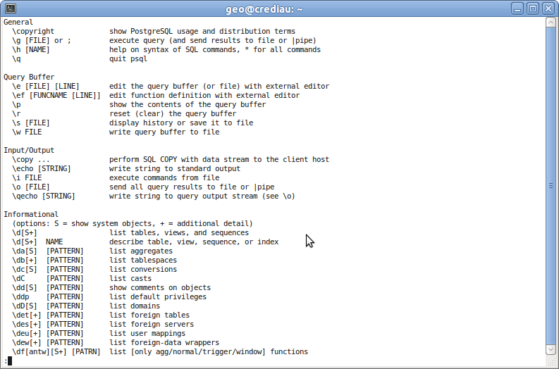
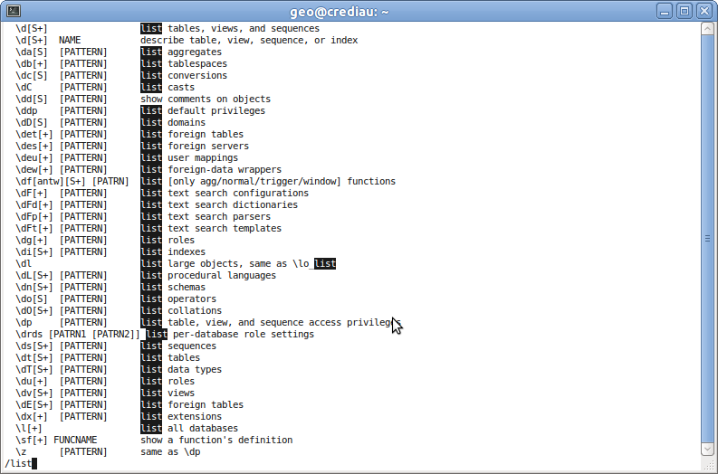
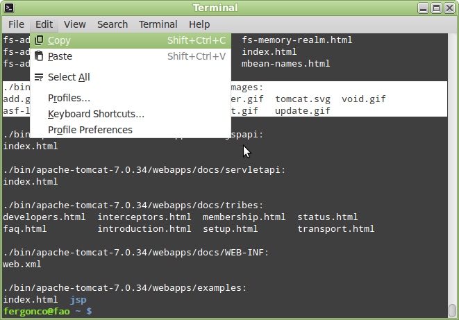

Note
©2012 Fernando González Cortés y Miguel García Coya
Excepto donde quede reflejado de otra manera, la presente documentación se halla bajo licencia : Creative Commons (Creative Commons - Attribution - Share Alike: http://creativecommons.org/licenses/by-sa/3.0/deed.es)
En el símbolo de sistema presentado es posible hacer uso de una serie de comandos que la mayor parte de sistemas linux tienen. Pero antes de ver los comandos es importante tener claro cómo se organiza el sistema de ficheros y cómo se referencian estos mediante rutas relativas y absolutas.
El sistema de ficheros linux se organiza jerárquicamente a partir de un directorio llamado “raíz” y que se denota por la barra inclinada hacia adelante (/). En linux los ficheros se referencian mediante rutas. Estas rutas pueden ser relativas o absolutas. Las absolutas comienzan por /, mientras que las relativas empiezan por el nombre de un subdirectorio, por . (directorio actual) o por .. (directorio padre).
Así pues, podemos tener rutas absolutas como:
/tmp
/home/geo
/home/geo/Escritorio
etc.
Note
En la documentación antepondremos el símbolo $ a toda aquella instrucción que se puede ejecutar en la línea de comandos de un sistema Linux. ¡¡Pero dicho símbolo no forma parte de la instrucción!!
Las rutas absolutas se pueden utilizar desde cualquier directorio. Podemos listar los directorios anteriores con los siguientes comandos, independientemente del directorio en el que se esté:
$ ls /tmp
$ ls /home/geo
$ ls /home/geo/Escritorio
Las rutas relativas en cambio, parten del directorio actual. Si por ejemplo estamos en /home/geo, podemos listar los directorios anteriores con los siguientes comandos:
$ ls ../../tmp
$ ls .
$ ls Escritorio
o “navegando” de forma más caprichosa:
$ ls Escritorio/../../../tmp
$ ls ./././././././././././../geo
$ ls ../geo/Escritorio
A continuación mostramos algunos comandos útiles en linux:
less: Visualiza un fichero de texto. La interacción es la misma que la descrita en el apartado “Ayuda de psql” anterior:
$ less ruta_fichero_a_visualizar
El fichero a visualizar se presenta de una manera muy común en los sistemas UNIX y que podemos identificar porque en la esquina inferior izquierda tenemos el signo de los dos puntos (:) seguido del cursor.
Podemos navegar por el contenido pulsando los cursores arriba y abajo, así como las teclas de página anterior y posterior.
También es posible hacer búsquedas utilizando el comando /texto. Una vez pulsamos intro, se resaltarán las coincidencias encontradas, como se puede ver en la siguiente imagen. Para navegar a la siguiente coincidencia es posible pulsar la tecla ‘n’ y para ir a la anterior Mayúsculas + ‘n’
Para salir pulsar ‘q’.
nano: Permite editar ficheros. En la parte de abajo se muestran los comandos para salir, guardar el fichero, etc.:
$ nano ruta_fichero_a_editar
Cuando se trabaja en modo texto en linux, dependiendo de la aplicación terminal utilizada, es posible copiar y pegar texto de la forma habitual: seleccionando con el ratón y presionando una combinación de teclas. Sin embargo, esta combinación de teclas suele ser diferente a las habituales (Ctrl+C, Ctrl+V) ya que Ctrl+C tiene un significado distinto en el terminal: el de interrumpir el proceso que se está ejecutando. La combinación de teclas se puede averiguar si se utiliza un terminal con barra de menúes como el siguiente:
Si la aplicación terminal que se utiliza no incorpora menu, como xterm, siempre se puede utilizar un método bastante cómodo y siempre disponible en Linux que consiste en seleccionar el texto y pegar directamente con el botón central del ratón. Lo engañoso de este método es que el texto se pega en la posición del cursor y no allí donde se pincha.
Ejercicio: Crear un fichero con tu nombre y que contenga este apartado.
locate: Localiza ficheros en el sistema operativo:
$ locate parte_del_nombre_del_fichero
Un aspecto a tener en cuenta en el uso de locate es que el sistema programa escaneos regulares del disco para construir un índice con los ficheros existentes y permitir así a locate responder al usuario sin tener que realizar la búsqueda en el sistema de ficheros, que toma mucho tiempo. Es por esto que locate funciona muy rápido pero puede que no encuentre los ficheros creados recientemente. Para estos, habrá que esperar a que se produzca un escaneo programado o lanzar un escaneo de forma manual con updatedb.
find: Localiza ficheros en el sistema de archivos:
$ find ruta -name nombre_del_fichero
A diferencia de locate, el comando find recorrerá el sistema de archivos cada vez que se lo ejecute, sin emplear índices. Por esa razón, si bien es mucho más lento el resultado, puede hallar ficheros que no se hayan indexado, por ejemplo, los ficheros creados recientemente.
id: Muestra la identidad actual del usuario:
$ id
su: Permite autenticarse con un usuario distinto. El siguiente comando probablemente no funcionará porque es necesario tener permisos de superusuario para realizar su, ver el siguiente caso:
$ su postgres
sudo: No es un comando en sí, sino que permite ejecutar el comando que le sigue con permisos de superusuario. Por ejemplo, para ejecutar el comando anterior con permisos de superusuario:
$ sudo su postgres
passwd: Cambia el password de un usuario. Por ejemplo para cambiar el password de root:
$ sudo passwd root
ssh: Acceso remoto en línea de comandos. Con SSH es posible entrar a un servidor remoto que tenga activado dicho acceso. Para ello es necesario especificar la dirección del servidor:
$ ssh 168.202.48.151
The authenticity of host '168.202.48.151 (168.202.48.151)' can't be established.
ECDSA key fingerprint is 9f:7c:a8:9c:8b:66:37:68:8b:7f:95:a4:1b:24:06:39.
Are you sure you want to continue connecting (yes/no)? yes
En la salida anterior podemos observar como primeramente el sistema pregunta por la autenticidad de la máquina a la que queremos conectar. Tras responder afirmativamente el sistema nos comunica que el servidor al que vamos a conectarnos se añade a la lista de hosts conocidos, de manera que el mensaje anterior no volverá a aparecer la siguiente vez que se intente una conexión. A continuación el sistema pregunta el password del usuario “usuario”:
Warning: Permanently added '168.202.48.151' (ECDSA) to the list of known hosts.
usuario@168.202.48.151's password:
En caso de querer conectar con otro usuario es necesario prefijar el nombre de dicho usuario, seguido del carácter “@” antes de la dirección del servidor:
$ ssh otro_usuario@168.202.48.151
scp: Copia ficheros al servidor:
$ scp fichero_origen directorio_destino
El directorio puede ser una ruta normal o la cadena de conexión por SSH a un servidor remoto. Veamos varios ejemplos. El siguiente copia ficheros locales en el directorio /tmp de un servidor remoto:
$ scp mi_fichero_local geo@geoportalcredia.org:/tmp
El siguiente comando copia el fichero de vuelta:
$ scp geo@geoportalcredia.org:/tmp/mi_fichero_local .
Se puede observar que el format de la URL remota es parecido al que se usa para conectar por cliente SSH. La única diferencia es que al final, separado por (:), encontramos una ruta en la máquina remota
Ejercicio: Conectar a una máquina linux usando estos comandos.
Ejercicio: Copiar el fichero creado en el apartado sobre nano en /tmp
Ejercicio: Conectar al sistema linux desde windows y copiar un fichero cualquiera haciendo uso de putty.exe y scp.exe.
zip: Comprime ficheros:
$ zip -r ruta_fichero.zip lista_de_ficheros_a_comprimir
La opción -r hace que zip incluya los contenidos de los directorios que se encuentre en la lista de ficheros a compartir.
unzip: Descomprime ficheros:
$ unzip ruta_fichero.zip
chgrp: cambia el grupo de usuarios de un archivo o directorio en sistemas tipo UNIX. Cada archivo de Unix tiene un identificador de usuario (UID) y un identificador de grupo (GID) que se corresponden con el usuario y el grupo de quien lo creó.
El usuario root puede cambiar a cualquier archivo el grupo. Los demás usuarios sólo pueden hacerlo con los archivos propios y grupos a los que pertenezca.:
$ chgrp nuevogrp archivo1 [ archivo2 archivo3...]
Cambia el grupo de archivo1 archivo2, etc. que pasará a ser nuevogrp
$ chgrp -R nuevogrp directorio
Cambia el grupo para que pase a ser nuevogrp a directorio, todos los archivos y subdirectorios contenidos en él, cambiándolos también de forma recursiva en todos archivos de los subdirectorios.
chown: cambiar el propietario de un archivo o directorio:
$ chown nuevousr archivo1 [ archivo2 archivo3...]
$ chown -R nuevousr directorio
chmod: permite cambiar los permisos de acceso de un archivo o directorio:
$ chmod [modificadores] permisos archivo/directorio
Ejercicio: Quitarse el permiso de lectura sobre el fichero creado en el apartado de nano.
wget: Utilizado para descargar ficheros de distintos servidores HTTP, HTTPS y FTP. Basta con teclear wget seguido de la dirección del fichero en internet:
wget http://www.esri.com/library/whitepapers/pdfs/shapefile.pdf
Entre las muchas opciones que soporta, la más frecuente es -O <nombre_fichero>, que permite dar un nombre distinto al fichero descargado:
wget http://www.esri.com/library/whitepapers/pdfs/shapefile.pdf -O especificacion_shapefile.pdf
Ejercicio: Descargar el logo del portal de FAO (http://fao.org) con wget
Aprovecharemos para explicar una funcionalidad de Linux que nos vendrán bien más adelante:
Redireccionamiento: En linux es posible mediante el uso del caracter mayor que > redireccionar la salida de un proceso hacia otro proceso. Por ejemplo, podremos escribir en un archivo mediante:
Creamos el archivo vacio mediante el comando ``touch``
$ touch nombre_del_archivo
``echo`` nos permite escribir texto en la consola
$ echo "Estoy escribiendo en el archivo" > nombre_del_archivo
$ nano nombre_del_archivo
y podremos ver el texto “Estoy escribiendo en el archivo” en el archivo que hemos creado. Esta función será usada muy habitualmente para la generación de archivos sql con la salida de las operaciones.
La instalación de aplicaciones en Linux se hace mediante el uso de herramientas de gestión de paquetes. En función de la distribución que estemos utilizando utilizaremos una herramienta u otra dependiendo de la versión en la que se base nuestra distribución Debian, Red Hat... En nuestro caso, como nuestra versión se basa en la distribución Debian, utilizaremos la herramienta apt:
- Buscar aplicaciones::
$ apt-cache search nombre_aplicación
Ver información sobre la aplicación:
$ apt-cache show nombre_aplicación
Instalar aplicación:
$ apt-get install nombre_aplicación (con permisos de superusuario)
Eliminar aplicación (con permisos de superusuario):
$ apt-get remove nombre_aplicación
$ apt-get purge nombre_aplicación
en este último caso eliminará también los archivos de configuración que haya instalado la aplicación.
La herramienta apt conoce los repositorios desde los que descargarse los archivos gracias a que se lo indicamos en un archivo, denominado sources.list que se encuentra en la carpeta /etc/apt de nuestra distribución. Si queremos añadirle un repositorio más podremos:
$ sudo echo "ruta al repositorio en la red" > /etc/apt/sources.list
después debemos actualizar los repositorios disponibles mediante:
$ apt-get update
Para una descripción completa de las operaciones que son posibles mediante apt-get se recomienda el uso de:
$ apt-get --help
Realizar el siguiente ejercicio:
Crear un fichero llamado /tmp/copy-contents.sh con las siguientes líneas (sustituyendo <servidor> y <nombre> por valores adecuados):
wget http://www.diva-gis.org/data/rrd/ARG_rrd.zip -O rails.zip unzip rails.zip scp * nfms@<servidor>:/tmp/<nombre>Dar permisos de ejecución
Ejecutar
Ejercicio: Crear un fichero vacío en /var/lib/postgresql
De cuantas maneras es posible realizar esto?
- Usando sudo para crear el fichero
- Creando el fichero como postgres
- Cambiando los permisos al directorio. ¡NO!